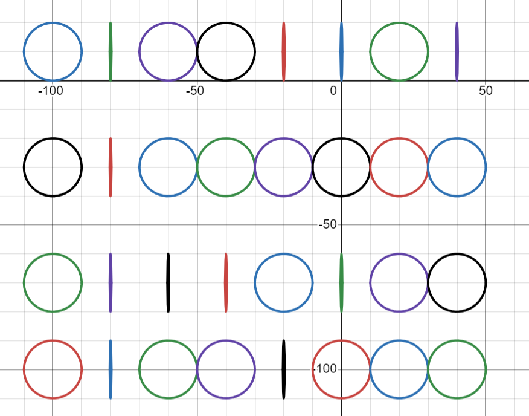
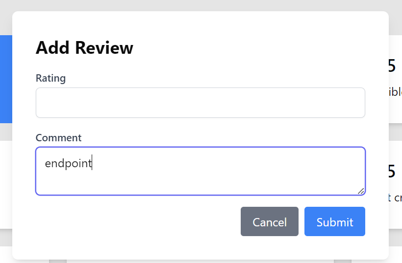
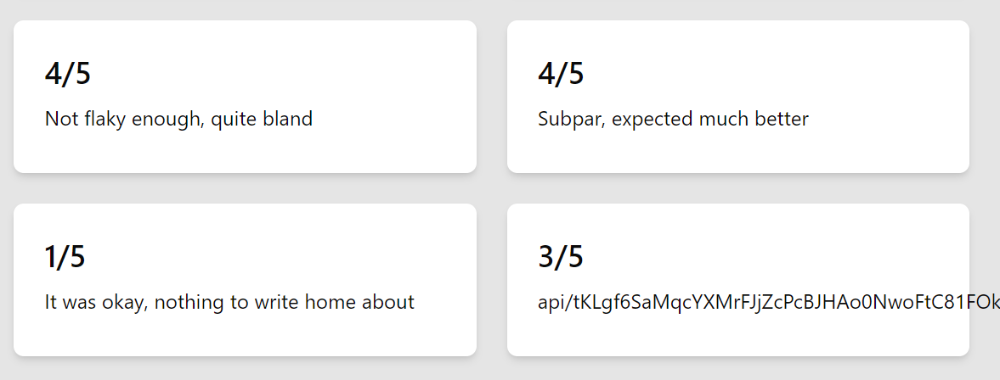
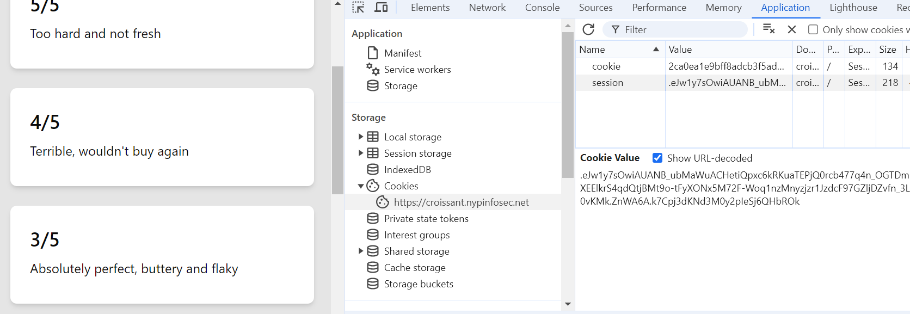
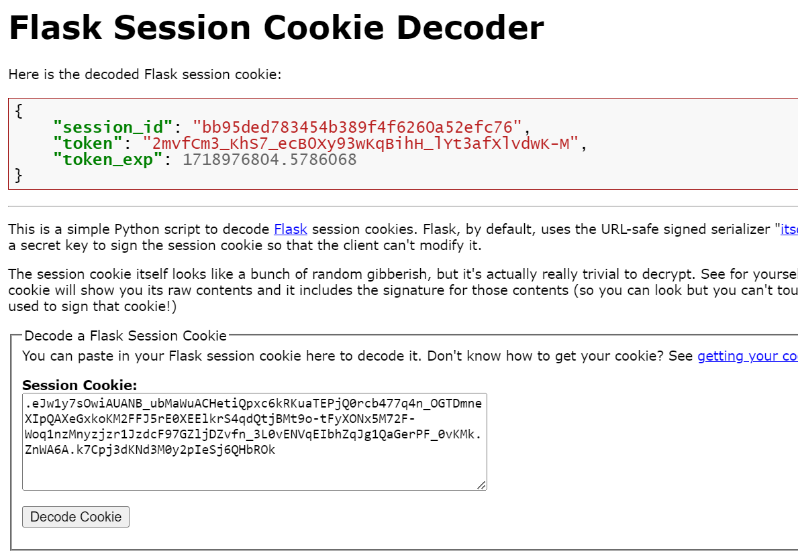
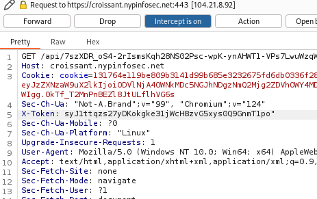
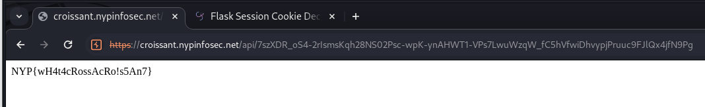

c4cce5c54gececgfcecgecfecfecfege\left(y-10\right)^{2\ }+\left(x+100\right)^{2\ }\ =100cecec34c3cw4c3cg45c4cc4c54c54c64c466c45c54cr4cr45f
heres a single line from the .txt file. squint (bolding mine) and you'll see a latex equation. just manually go through all 32 lines and extract the latex equations, then plot them in desmos

it's binary, just decode it to M@TH, the answer. tada!ENDPOINT: str = f"/api/{secrets.token_urlsafe(64)}"
newReview = CroissantReview(
rating=int(rating),
comment=cast(str, comment).replace("endpoint", ENDPOINT, 1),
)

moneyshot@app.get(ENDPOINT)
def get_flag():
if "cookie" not in request.cookies:
return {
"message": "Hey!! What about my chocolate chip cookies?!",
"status": 403,
}, 403
validate_token()
return FLAG
def validate_token(with_check: bool = True) -> Optional[str]:
token = request.headers.get("X-Token")
if with_check and (not token or token != session.get("token")):
raise Forbidden("Invalid token")
session.pop("token", None)
session.pop("token_exp", None)
return token
just open console, look for cookies, the session one is what u want. then google 'flask session token decoder', peel slowly and see -
zip zap just send another request to the api endpoint with that special token we achieved and it should be solved, theres many diff ways u can send a request with a specific header tho, i used burp
